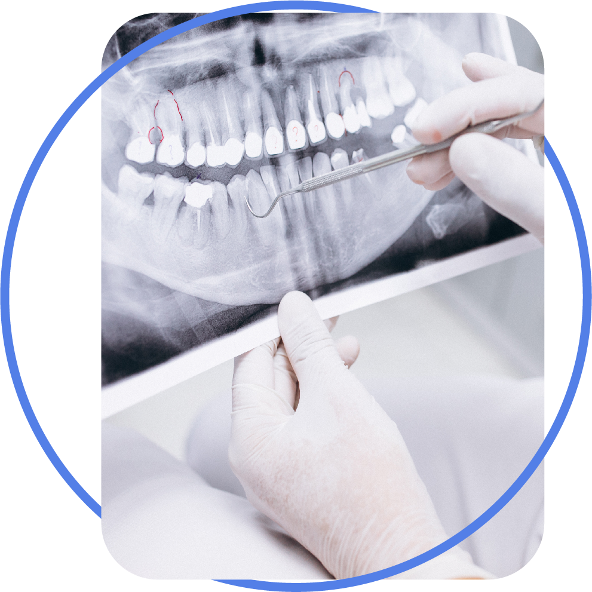

DIAGNOSTICO POR IMAGENES
Trabajamos con el escáner de placa de fósforo que cuenta con tecnología de última generación ,
cuenta con un sistema de radiografía digital que posibilita la adquisición de imágenes en
segundos proporcionando la obtención de alta calidad en las imágenes y la elaboración de
diagnósticos más precisos y claros, además hace que la toma de la imagen sea más confortable
para los pacientes.
Los escáners poseen softwares con amplia escala de grises, de herramientas para edición como
rotación zoom, ajuste de brillo, contraste, inversión de colores, inserción de texto, flechas
círculos, medición de ángulos y segmentos. También odontograma y comparación de imágenes en
pantalla completa exportable en varios formatos. De esta forma, es muy fácil poder enviar
imágenes por medio de correo electrónico.
Los sensores intraorales de fósforo tienen una parte blanca, que es la parte sensible porque
están en ese sector los cristales de fósforo, por lo tanto es donde va a aparecer la imagen. El
reverso es oscuro, no hay presencia de cristales de fósforo, hay que tener mucho cuidado en su
manipulación.
